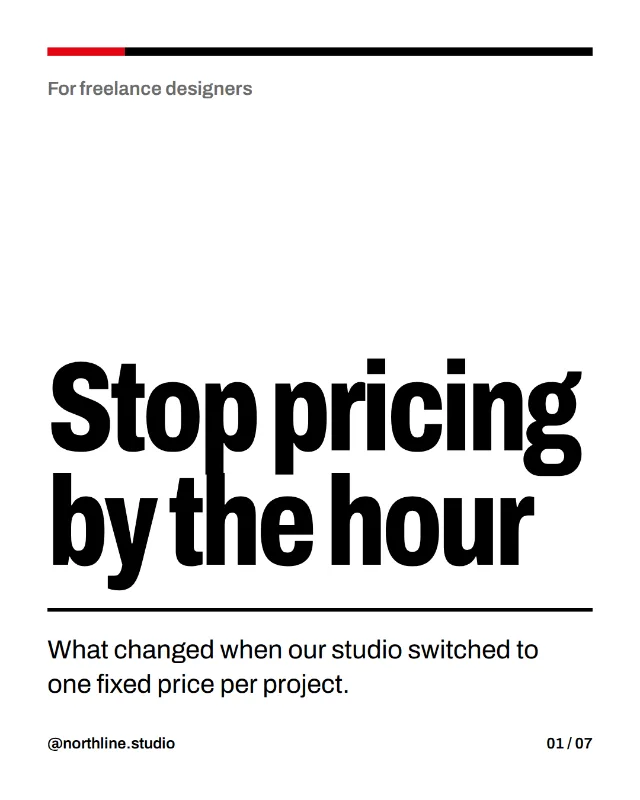
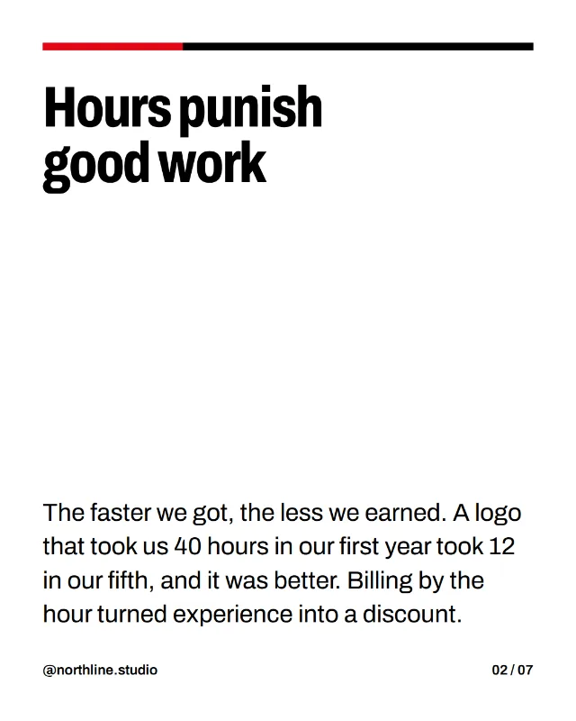
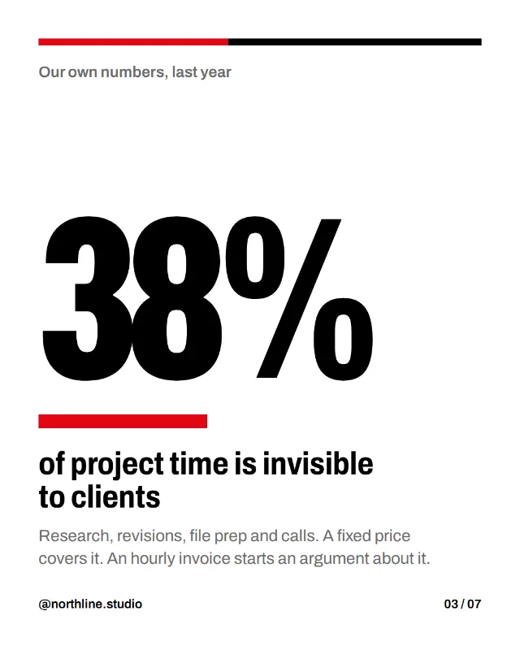
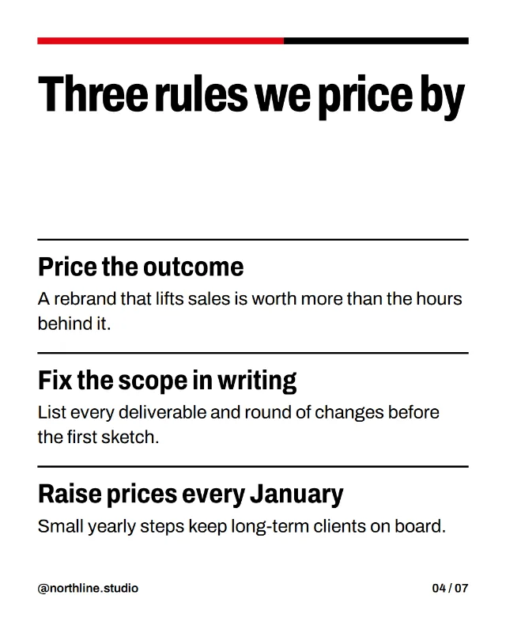
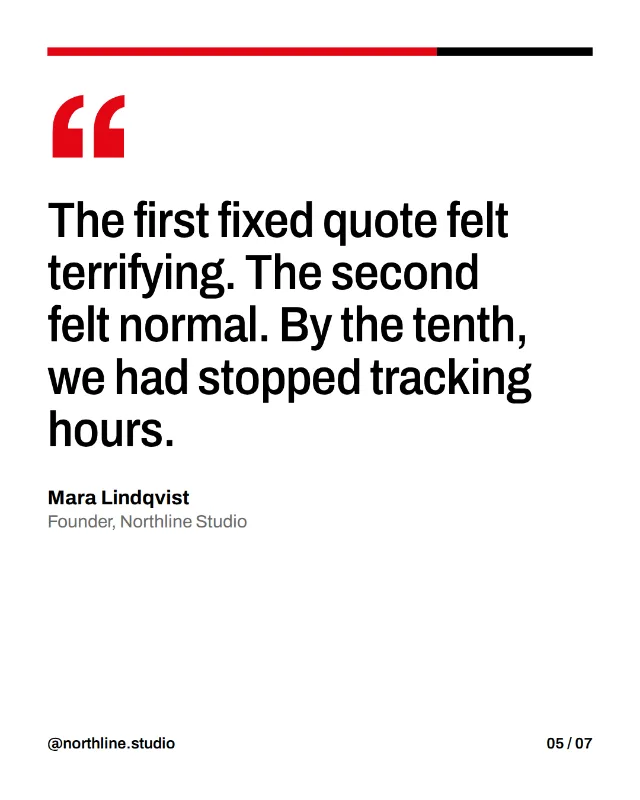
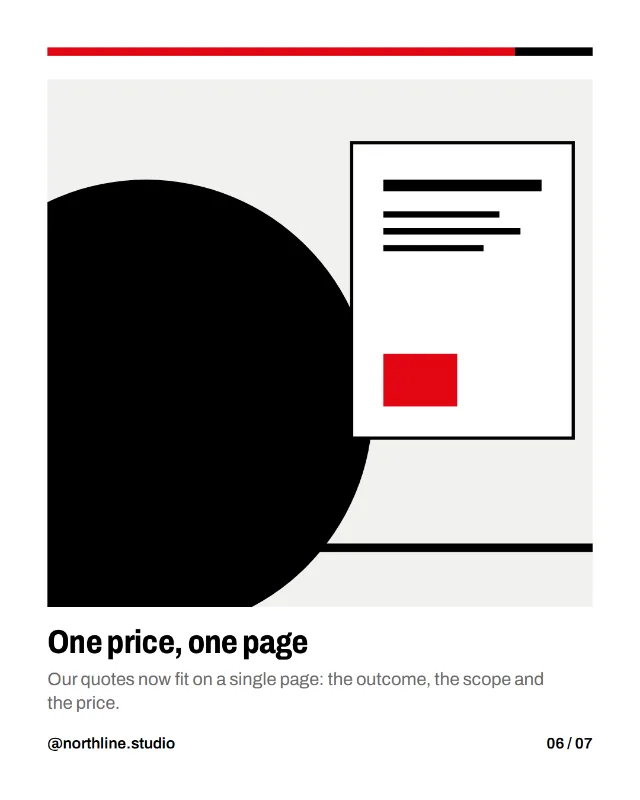
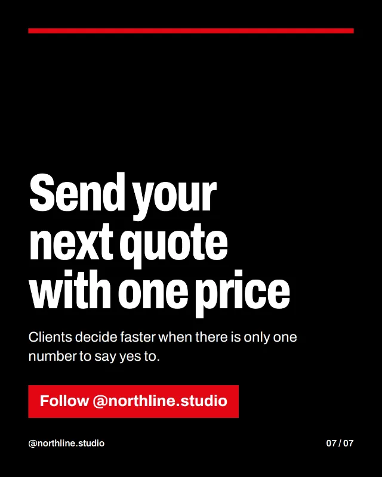

Swiss Grid
Big condensed grotesque on white, a strict grid, black rules, and one red bar that shows how far the reader is.
Suits professional tips, LinkedIn explainers, frameworks, business lessons, data-led posts.
Make a LinkedIn carousel about why we stopped billing by the hour, in the Swiss Grid style.






